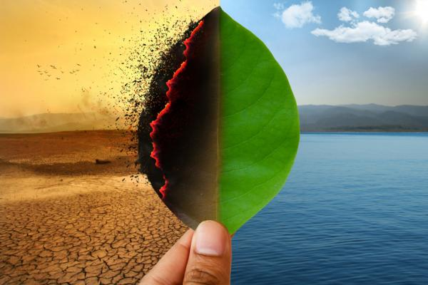

¿Por qué es preocupante?
El rápido aumento de los gases de invernadero es un problema porque está cambiando el clima tan rápido que algunos seres vivos no pueden adaptarse. Igualmente, un clima nuevo y más impredecible impone desafíos únicos para todo tipo de vida y del que los científicos ya han derivado diversos puntos de no retorno en el planeta.
el clima de la Tierra ha oscilado entre temperaturas como las que tenemos en la actualidad y temperaturas tan frías que grandes capas de hielo cubrían la mayor parte de Norteamérica y Europa. La diferencia entre las temperaturas globales medias y durante las edades de hielo tan solo es de 9 grados Fahrenheit y estas oscilaciones se produjeron lentamente, durante el trascurso de cientos de miles de años.
En la actualidad, con las concentraciones de gases de invernadero aumentando, las capas de hielo que permanecen en la Tierra (como Groenlandia y la Antártida) también comienzan a derretirse. Esta agua sobrante podría hacer que aumente considerablemente el nivel del mar.
Conforme sube el mercurio, el clima puede cambiar de forma inesperada. Además del aumento del nivel del mar, las condiciones meteorológicas pueden pasar a ser más extremas. Esto implica tormentas mayores y más intensas, más lluvia seguida de sequías más prolongadas e intensas (un desafío para los cultivos), cambios en los ámbitos en los que pueden vivir los animales y pérdida del suministro de agua que históricamente provenía de los glaciares. La mayor parte del calentamiento global se ha dado en las últimas cuatro décadas, coincidiendo con el aumento de la emisión de gases de efecto invernadero por parte del hombre, según ha señalado la NASA.
